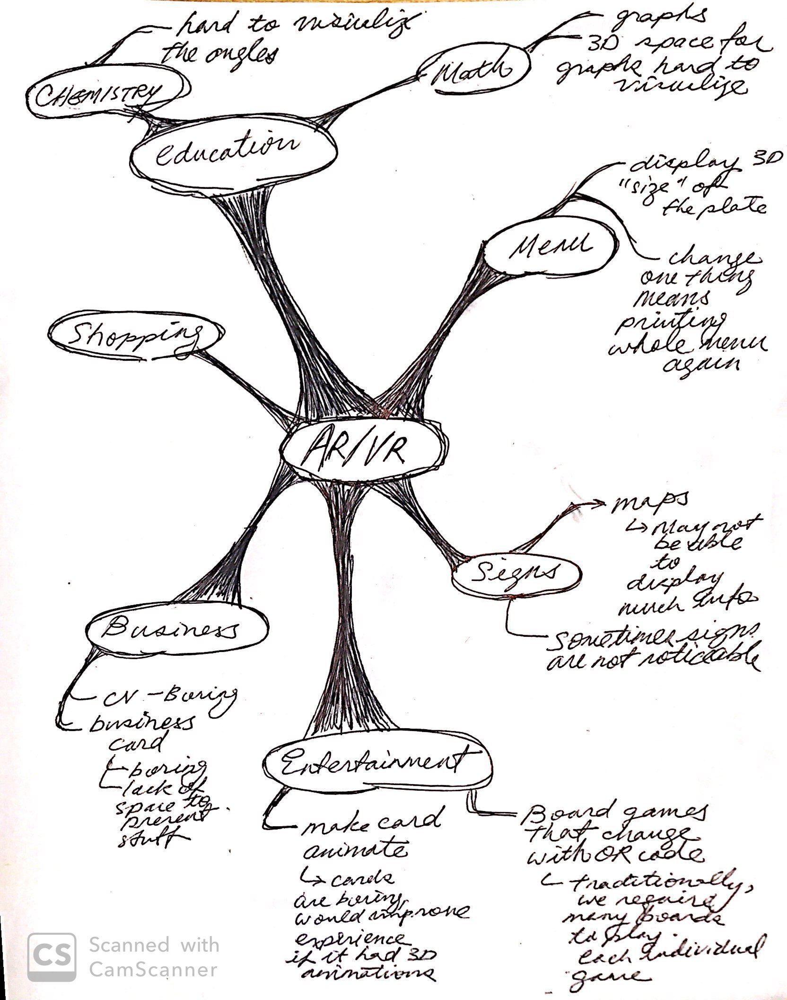
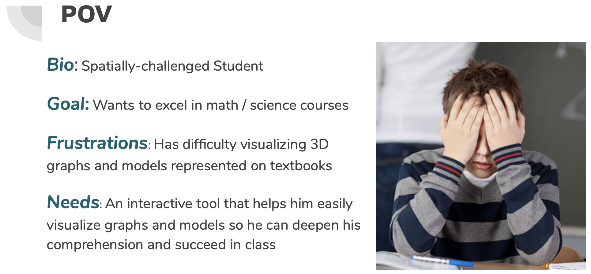

Izen Brast Huang

Undergraduate Student
Studying Computer Engineering
at Hong Kong University of Science and Technology
Cirriculum Vitae (CV)
Last updated Sep 1 2019
Outline
Designing an Augmented Reality Paper
To improve upon pre-existing paper solutions
Introduction
In this project, we aimed to look at existing paper solutions, and think about different ways in which we coule use augmented reality (AR) to address the limitations of these existing solutions.
There are many limitations of traditional paper products, and the 3 main limitations our group decided to focus on were: the limitation of the amount of space on paper, the limited interaction of paper products, and the limited effectiveness of representing 3D objects on paper products.
The Problem
Discovering the Problem
In this stage of the design process, we aimed to explore a wide variety of paper products and their limitations. To do so, we used a technique called mind-mapping to explore different areas which use paper, and the problems with these existing solutions.
Mindmap we used to ideate problems
A few example areas and their limitations we explored were menus used in restaurants, board games used for entertainment, and textbooks used in education. We ended up choosing to tackle the limitations of textbooks used in the education area because, as students, we are in frequent contact with textbook, and have personally suffered from the limitations of traditional textbook, or printed out lecture slides.
Defining the Problem
The main limitation of traditional textbooks we wanted to address is its inability to express 3D objects. For example, when I took UST’s multivariable calculus course, we dealt with problems in the 3D space, and to illustrate this, the instructor had to either try to draw the graphs/curve from different angles, use makeshift paper models, or even try to use his hand to “hold” the models. Whilst the above approaches may have worked for some students, many people whom we conducted admitted to having difficulties with spatial imagining.
A second limitation of paper products is its limited space. As 3D models drawn on 2D space often take up much room on the paper, there is a limited number of “drawn models” a piece of paper can fit. Furthermore, for students who need multiple angles of a 3D model to get the whole picture, having multiple angles of 1 3D model on the same paper takes up even more space. With traditional paper products, it is difficult to be both environmentally friendly, and effectively communicate a 3D model at the same time.
With our AR solution, we wanted it to effectively represent 3D models, and save the amount of paper a textbook would normally need. A short survey conducted with fellow students in the library confirmed our belief that most students do have a hard time visualizing 3D objects, and an AR solution displaying 3D objects would benefit their learning experience. With a problem defined, we then proceeded to construct a POV (user + need + insight) to begin the solution finding process.
POV = user + need + insight
The Solution
Developing the Solution
After brainstorming different solutions, we conducted more surveys (speed dating) to empathize with the users, and also have feedback on the potential limitations of our proposed solution. A technique we used in part of the survey was storyboarding, which allows to communicate clearly with the viewer of why we wanted to make each solution, and how the solution would be useful/be used. We made storyboards for 4 solutions, and compiled it into a table below:
| Solution | Description | User Feedback |
|---|---|---|
| Pop-Up Models | When the user opens a page, a “pop-up” like those seen on birthday cards appears to represent the 3D structure |
Pros:
Cons:
|
| Online Graph Generators | User inputs a formula, or perhaps a molecular formula to render a 3D model on screen |
Pros:
Cons:
|
| AR 3D Models | User scans textbook with phone to recognize markers and display a 3D model on screen |
Pros:
Cons:
|
After evaluating several solutions, we decided upon the AR solution for it received the most positive feedback. From thereon, we went on to designing and developing the prototype.
Delivering the Solution (Prototyping)
We first found 3D models to be imported to Unity from free online libraries. Unfortunately, we were unable to find 3D models of mathematical graphs/curves online, so we decided to build our first prototype with chemical molecules. Once the model was correctly placed next the marker, we also built a button for the user to rotate the 3D model in space, and finally exported to an android application. Together, the mobile application presented a 3D model attached to the marker, and a button to rotate the model in space. Below is a video demonstration of our prototype:
Feedback & Personal Evaluation of Prototype
Overall, the feedback on our prototype was positive, and users said our objectives of effectively representing a 3D model was met. Users were also impressed at how “quick” the 3D models appeared on the screen; this is compared to existing online solutions such as Wolfram Alpha, Desmos online calculator, or Matlab, in which which the user has to first input the chemical name/function, or go through complicated steps of programming in Matlab to render a 3D model.
In retrospect, I realized our solution is not a huge extension beyond Wolfram Alpha or Desmos; a true breakthrough in solving this problem might be to use holograms, which represents a model in the actual 3D space. However, until that technology is common, this AR solution might be the best thing.
Concluding Remarks
Our first prototype was very basic, but there is much potential. A potential extension to our prototype is a software that could read formulas from the camera, and deduce the required 3D model from that function, and display it onto the screen. That way, we won’t be limited by the number of 3D models available to us. Considering that most mathematical graphs can be easily deduced, this function would not be impossible to implement. This goes beyond mathematics; chemical molecules and other “formulaic” displays can all display “deduced” models, which will not need a pre-downloaded image in the database.
Personal Contribution
My overall contribution to this project involves being there for the majority of the meeting times and contributing to brainstorming for problems & solutions. Specifically, I have: